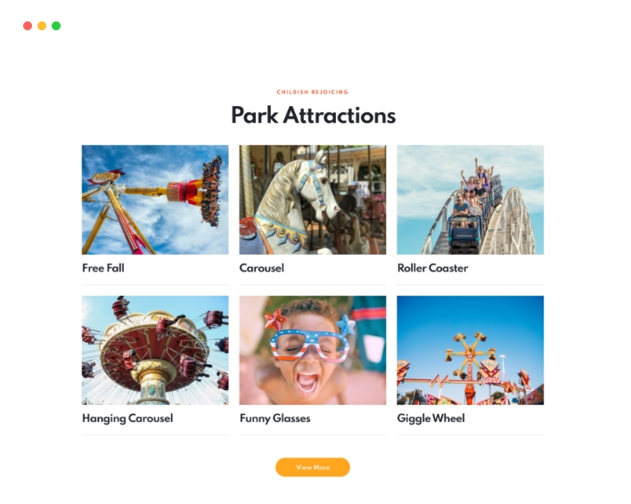
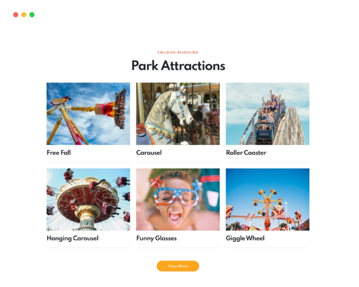

EASY&INTUITIVE
Elementor Page Builder
Learning management system, combines a wide range of features to present a class setting without having the students come into a physical classroom. It all depends on the WordPress LMS plugin you go with, but in general


 
